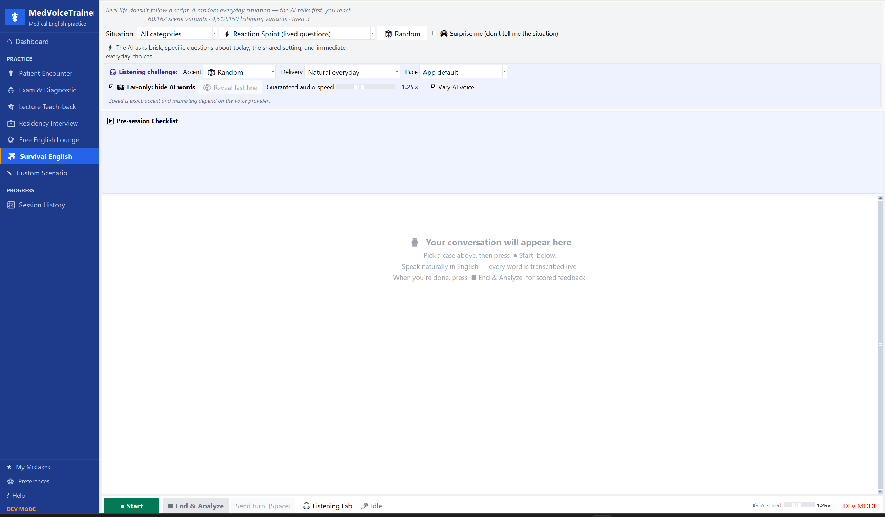

01
Before the wards / Survival English
Train uncertainty before it becomes pressure.
For pre-med and early-year IMGs: everyday situations change their role, goal, detail, voice, accent profile, pace, and delivery. You practice the response—not a memorized line.
Surprise mode hides the situationEar-only listening hides AI wordsVoice and delivery keep rotating
